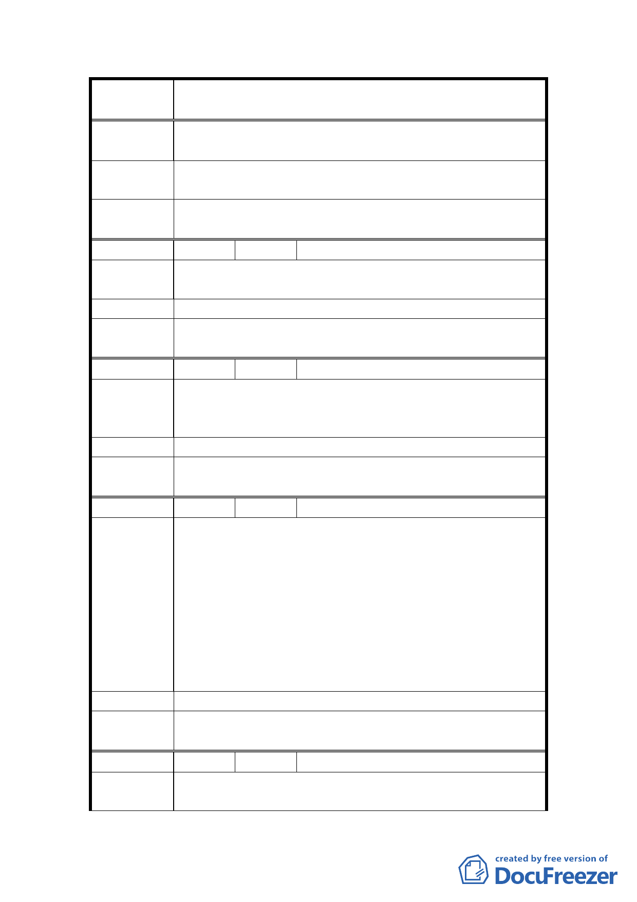

案
名
變更臺北市士林區三玉段一小段 22-3 地號等體育場用
地（天母運動公園）為臺北市立體育學用地主要計畫案
陳情理由
天母運動公園不僅是天母地區人使用，甚至有外國人及
天母地區以外的人士使用，不建議作任何變更。
建議辦法
可否請體育學院另找其他需要開發的地區，例如關渡平
原……，我想那些地區更需要體院來帶動地方繁榮。
委員會決
議
同編號 1。
編 號 6 陳情人 劉德宏
陳情理由
請遷建至其他需要北體院的地區，不可用天母人的「後
花園」天母運動公園。
建 議 辦 法 遷至他處。
委員會決
議
同編號 1。
編 號 7 陳情人 發展局函轉之陳情意見（未具名）
如果按照政府早就規劃為學校用地，為何剛開始不直接
陳 情 理 由 變更為機關用地。是否運動場用地變更跟學校用地變更
檢討項目不同，是否需要做環境評估、交通量調查。
建 議 辦 法 請都委會委員開一場公聽會，廣聽民眾心聲。
委 員 會 決 市府應依都市計畫法相關法令依法辦理都市計畫說明
議 會。
編 號 8 陳情人 張朝棟
1.反對變更。
2.原規劃係供市民使用，僅有「體專教室」乙項，若草
率變更喪失原規劃目的，違反民眾「信賴利益」保護
原則，絕非保障民眾利益之變更。
陳 情 理 由 3.若變更後，體育學校的使用，以及用學校的預算來維
護場地，與市政府預算來維護場地，方向與方針，尤
其是使用重點，絕對會因該場地的使用目的而不同。
因此，維護該場地的原使用目的，絕對是維護市民利
益的必要手段。
建 議 辦 法 反對變更
委員會決
議
同編號 1。
編 號 9 陳情人 楊麗美、蔡啟仲
陳情理由
堅決反對改變地目，由公園改為學校用地，因為公園綠
地變小，造成交通環境惡化，因建蔽率不同、使用不同，
13